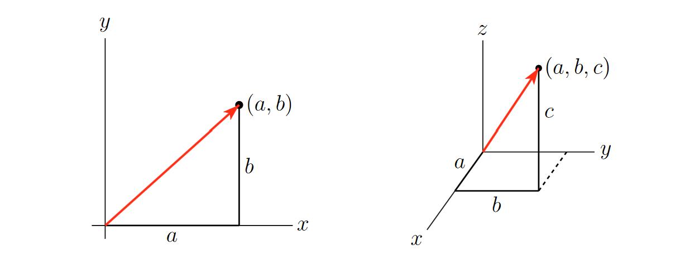
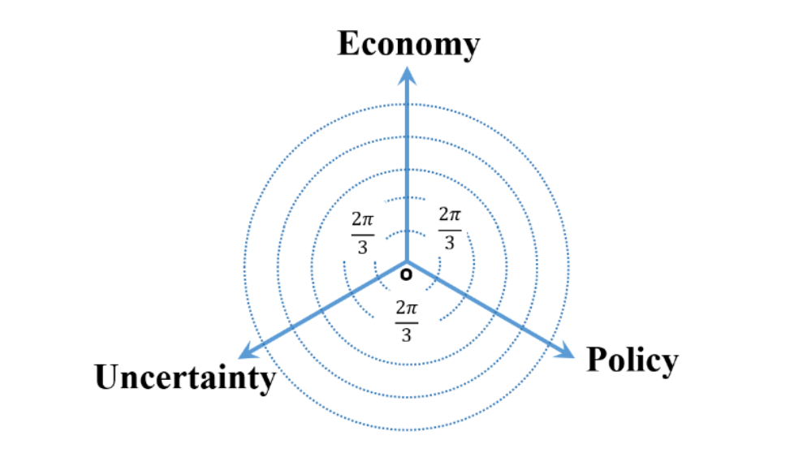

# !pip install matplotlib
# !pip install pandas
%pylab inline
matplotlib.style.use('ggplot')4.4 - Advanced - Word Embeddings (Python)
advanced
python
natural language processing
large language models
word embeddings
word2vec
vectors
cosine similarity
This notebook introduces the concept and implementation of word embeddings, as used in AI tools like LLMs, in Python.

This notebook was prepared by Laura Nelson in collaboration with UBC COMET team members: Jonathan Graves, Angela Chen and Anneke Dresselhuis
Prerequisites
- Some familiarity programming in R
- Some familarity with natural language processing
- No computational text experience necessary!
Learning outcomes
In the notebook you will
- Familiarize yourself with concepts such as word embeddings (WE) vector-space model of language, natural language processing (NLP) and how they relate to small and large language models (LMs)
- Import and pre-process a textual dataset for use in word embedding
- Use word2vec to build a simple language model for examining patterns and biases textual datasets
- Identify and select methods for saving and loading models
- Use critical and reflexive thinking to gain a deeper understanding of how the inherent social and cultural biases of language are reproduced and mapped into language computation models
Outline
The goal of this notebook is to demystify some of the technical aspects of language models and to invite learners to start thinking about how these important tools function in society.
In particular, this lesson is designed to explore features of word embeddings produced through the word2vec model. The questions we ask in this lesson are guided by Ben Schmidt’s blog post, Rejecting the Gender Binary.
The primary corpus we will use consists of the 150 English-language novels made available by the .txtLab at McGill University. We also look at a word2Vec model trained on the ECCO-TCP corpus of 2,350 eighteenth-century literary texts made available by Ryan Heuser. (Note that the number of terms in the model has been shortened by half in order to conserve memory.)
Key Terms
Before we dive in, feel free to familiarize yourself with the following key terms and how they relate to each other.

|
Artificial Intelligence (AI): This term is a broad category that includes the study and development of computer systems that can mimic intelligent human behavior (adapted from Oxford Learners Dictionary). Machine Learning (ML): This is a branch of AI that uses statistical methods to imitate the way that humans learn (adapted from IBM). Natural Language Processing (NLP): This is a branch of AI that focuses on training computers to interpret human text and spoken words (adapted from IBM). |
We note that NLP is a subset of ML in general: Machine Learning is a broader field focused on developing algorithms that allow computers to learn from data and make decisions or predictions without being explicitly programmed for each specific task. Natural Language Processing is a subfield of ML that specifically deals with enabling computers to understand, interpret, and generate human language.
Word Embeddings (WE): this is an NLP process through which human words are converted into numerical representations (usually vectors) in order for computers to be able to understand them (adapted from Turing) This topic is the focus of this notebook.
word2vec: this is an NLP technique that is commonly used to generate word embeddings. It learns vector representations of words by training on various texts, mapping words with similar contexts to similar vectors in a high-dimensional vector space. It uses either the Continuous Bag of Words (CBOW) or Skip-gram architecture to predict words based on their neighbors capturing semantic relationships between words (don’t worry about these words yet, we will learn them later!).
What are Word Embeddings?
Building off of the definition above, word embeddings are one way that humans can represent language in a way that is legible to a machine. More specifically, they are an NLP approach that use vectors to store textual data in multiple dimensions; by existing in the multi-dimensional space of vectors, word embeddings are able to include important semantic information within a given numeric representation.
For example, if we are trying to answer a research question about how popular a term is on the web at a given time, we might use a simple word frequency analysis to count how many times the word “candidate” shows up in tweets during a defined electoral period. However, if we wanted to gain a more nuanced understanding of what kind of language, biases or attitudes contextualize the term, “candidate” in discourse, we would need to use a method like word embedding to encode meaning into our understanding of how people have talked about candidates over time. Instead of describing our text as a series of word counts, we would treat our text like coordinates in space, where similar words and concepts are closer to each other, and words that are different from each other are further away.

For example, in the visualization above, a word frequency count returns the number of times the word “candidate” or “candidates” is used in a sample text corpus. When a word embedding is made from the same text corpus, we are able to map related concepts and phrases that are closely related to “candidate” as neighbours, while other words and phrases such as “experimental study” (which refers to the research paper in question, and not to candidates specifically) are further away.
Here is another example of how different, but related words might be represented in a word embedding:

Word embeddings in action: Kaveh-Yazdy & Zarifzadeh (2021)
In their 2021 paper “Measuring Economic Policy Uncertainty Using an Unsupervised Word Embedding-based Method”, Fatemeh Kaveh-Yazdy and Sajjad Zarifzadeh introduce a novel approach to measure Economic Policy Uncertainty (EPU), a measure of the level of economic uncertainty caused by new economic policies made by governments. By analyzing news data with a word embedding-based method and a dataset of 10 million Persian news articles, the authors constructed a Persian EPU index. The authors found a significant alignment between this EPU index and significant economic and political events in Iran at the time, matching trends in the global World Uncertainty Index (WUI). Additionally, the proposed method showed a strong correlation between suicide rates and EPU, particulary noting a higher correlation relative to other traditional EPU indices, supporting its reliability in reflecting societal impacts of economic uncertainty (Kaveh-Yazdy & Zarifzadeh, 2021).

A graph from Kaveh-Yazdy & Zarifzadeh (2021) showcasing their word embedding-based EPU calculation compared to traditional EPU
A Brief Review of Vectors

Vectors in \(\mathbb{R}^2\) and \(\mathbb{R}^3\), courtesy of CLP3
A vector is a mathematical object that has both a magnitude and a direction. You can think of it as an arrow pointing from one location to another in space. This arrow represents both a size (how long it is) and a direction (the way it’s pointing).
The vectors used in this notebook, for the purposes of learning, are two dimensional: they exist in $ ^2$. However, real embeddings are always multidimensional (we will get back to why this is the case later): they exist in \(\mathbb{R}^n\), where \(n\) is some verly large number.
Making a Word Embedding
So, how do word embeddings work? To make a word embedding, an input word gets compressed into a dense vector.

The magic and mystery of the word embedding process is that often the vectors produced during the model embed qualities of a word or phrase that are not interpretable by humans. However, for our purposes, having the text in vector format is all we need. With this format, we can perform tests like cosine similarity (which we will discuss later) and other kinds of operations. Such operations can reveal many different kinds of relationships between words, as we’ll examine a bit later.
Word2vec and vector encoding
The simplest form of vector-word encoding is called one-hot encoding. One-hot encoding is very similar to the creation of dummy varibles for categorical data in linear regressions: each word in the english language is assigned a binary value in a vector in \(\mathbb{R}^k\), where \(k\) is the number of words in the english language. For example, consider a language with only three words in it: “cat”, “dog”, and horse. Hence, our vector encodings are:
\[\text{Cat} \to <1,0,0>\] \[\text{Dog} \to <0,1,0>\] \[\text{Horse} \to <0,0,1>\]
Naturally, this becomes unfeasable with real languages: The english language contains roughly 1 million words, meaning each vector would be 1-million-dimensional, and each vector would require 4MB of storage on your computer. Good luck working with that!
This is where Word2Vec comes in: Word2Vec is a ML model designed to represent words as vectors that capture semantic relationships. It generates low-dimensional word embeddings by learning from word contexts in a large corpus, allowing words with similar meanings to have vectors close together. More precisely, word2vec is an algorithmic learning tool rather than a specific neural net that is already trained. The example we will be working through today has been made using this tool. - Unlike one-hot encodings, where words are represented in a high-dimensional space equal to the size of the vocabulary (potentially tens of thousands of dimensions) embeddings have values in every dimension, allowing them to be compact and memory-efficient, meaning that word embeddings usually have only 100-300 dimensions. This reduction captures essential semantic information without excessive dimensionality.
The series of algorithms inside of the word2vec model try to describe and acquire parameters for a given word in terms of the text that appear immediately to the right and left in actual sentences. Essentially, it learns how to predict text.
Without going too deep into the algorithm, suffice it to say that it involves a two-step process:
- First, the input word gets compressed into a dense vector, as seen in the simplified diagram, “Creating a Word Embedding,” above.
- Second, the vector gets decoded into the set of context words. Keywords that appear within similar contexts will have similar vector representations in between steps.
Imagine that each word in a novel has its meaning determined by the ones that surround it in a limited window. For example, in Moby Dick’s first sentence, “me” is paired on either side by “Call” and “Ishmael.” After observing the windows around every word in the novel (or many novels), the computer will notice a pattern in which “me” falls between similar pairs of words to “her,” “him,” or “them.” Of course, the computer had gone through a similar process over the words “Call” and “Ishmael,” for which “me” is reciprocally part of their contexts. This chaining of signifiers to one another mirrors some of humanists’ most sophisticated interpretative frameworks of language.
The two main model architectures of word2vec are Continuous Bag of Words (CBOW) and Skip-Gram, which can be distinguished partly by their input and output during training.
CBOW takes the context words (for example, “Call”,“Ishmael”) as a single input and tries to predict the word of interest (“me”).

Skip-Gram does the opposite, taking a word of interest as its input (for example, “me”) and tries to learn how to predict its context words (“Call”,“Ishmael”).

In general, CBOW is is faster and does well with frequent words, while Skip-Gram potentially represents rare words better.
Since the word embedding is a vector, we are able perform tests like cosine similarity (which we’ll learn more about in a bit!) and other kinds of operations. Those operations can reveal many different kinds of relationships between words, as we shall see.
Bias and Language Models
You might already be piecing together that the encoding of meaning in word embeddings is entirely shaped by the patterns of language use captured in the training data. That is, what is included in a word embedding directly reflects the complex social and cultural biases of everyday human language - in fact, exploring how these biases function and change over time (as we will do later) is one of the most interesting ways to use word embeddings in social research.
It is simply impossible to have a bias-free language model (LM).
In LMs, bias is not a bug or a glitch, rather, it is an essential feature that is baked into the fundamental structure. For example, LMs are not outside of learning and absorbing the pejorative dimensions of language which in turn, can result in reproducing harmful correlations of meaning for words about race, class or gender (among others). When unchecked, these harms can be “amplified in downstream applications of word embeddings” (Arseniev-Koehler & Foster, 2020, p. 1).
Just like any other computational model, it is important to critically engage with the source and context of the training data. One way that Schiffers, Kern and Hienert suggest doing this is by using domain specific models (2023). Working with models that understand the nuances of your particular topic or field can better account for “specialized vocabulary and semantic relationships” that can help make applications of WE more effective.
Preparing for our Analysis
Word2vec Features
Here are a few features of the word2vec tool that we can use to customize our analysis:
size: Number of dimensions for word embedding modelwindow: Number of context words to observe in each directionmin_count: Minimum frequency for words included in modelsg(Skip-Gram): ‘0’ indicates CBOW model; ‘1’ indicates Skip-Gramalpha: Learning rate (initial); prevents model from over-correcting, enables finer tuningiterations: Number of passes through datasetbatch size: Number of words to sample from data during each pass
Note: the script uses default value for each argument.
Some limitations of the word2vec Model
- Within word2vec, common articles or conjunctions, called stop words such as “the” and “and,” may not provide very rich contextual information for a given word, and may need additional subsampling or to be combined into a word phrase (Anwla, 2019).
- word2vec isn’t always the best at handling out-of-vocabulary words well (Chandran, 2021).
Let’s begin our analysis!
Excercise #1: Eggs, Sausages and Bacon

To begin, we are going to load a few packages that are necessary for our analysis. Please run the code cells below.
Create a Document-Term Matrix (DTM) with a Few Pseudo-Texts
To start off, we’re going to create a mini dataframe called a Document-Term Matrix (DTM). A DTM is a matrix (or in our case, a tidyverse dataframe) that represents the frequency of terms (words) appearing in a collection of documents. Our DTM is based on the use of the words “eggs,” “sausages” and “bacon” found in three different novels: A, B and C.
# dataframes!
import pandas
# Construct dataframe with three novels each containing three words
columns = ['eggs','sausage','bacon']
indices = ['Novel A', 'Novel B', 'Novel C']
dtm = [[50,60,60],[90,10,10], [20,70,70]]
dtm_df = pandas.DataFrame(dtm, columns = columns, index = indices)
# Show dataframe
dtm_dfVisualize
We’ll start by graphing all three axes using the plotly library:
import matplotlib.pyplot as plt
from mpl_toolkits.mplot3d import Axes3D
fig = plt.figure()
ax = fig.add_subplot(111, projection='3d')
ax.scatter(dtm_df['sausage'], dtm_df['bacon'], dtm_df['eggs'], color='blue', s=50)
ax.set_xlabel('Sausage')
ax.set_ylabel('Bacon')
ax.set_zlabel('Eggs')
for novel, row in dtm_df.iterrows():
ax.text(row['sausage'], row['bacon'], row['eggs'], novel, fontsize=9, ha='right')
plt.show()Now, let’s take a look at just two axes, eggs and sausage.
# Plot our points
scatter(dtm_df['eggs'], dtm_df['sausage'])
# Make the graph look good
xlim([0,100]), ylim([0,100])
xlabel('eggs'), ylabel('sausage')Vectors
At a glance, a couple of points are lying closer to one another. We used the word frequencies of just two of the three words (eggs and sausages) in order to plot our texts in a two-dimensional plane. The term frequency “summaries” of Novel A & Novel C are pretty similar to one another: they both share a major concern with “sausage”, whereas Novel B seems to focus primarily on “eggs.”
This raises a question: how can we operationalize our intuition that the spatial distance presented here expresses topical similarity?
Cosine Similarity
The most common measurement of distance between points is their Cosine Similarity. Cosine similarity can operate on textual data that contain word vectors and allows us to identify how similar documents are to each other, for example. Cosine Similarity thus helps us understand how much content overlap a set of documents have with one another. For example, imagine that we were to draw an arrow from the origin of the graph - point (0,0) - to the dot representing each text. This arrow is called a vector.
Mathematically, this can be represented as:

Because this similarity measurement uses the cosine of the angle between vectors, the magnitude is not a matter of concern (this feature is really helpful for text vectors that can often be really long!). Instead, the output of cosine similarity yields a value between 0 and 1 (we don’t have to work with something confusing like 18º!) that can be easily interpreted and compared - and thus we can also avoid the troubles associated with other dimensional distance measures such as Euclidean Distance.
Kaveh-Yazdy & Zarifzadeh (2021)
In their paper, Kaveh-Yazdy & Zarifzadeh measure EPU by embedding various persian news articles into a tri-axis, two dimensional representation system:

This Tri-axial Representation System is a non-standard coordinate system used to map the similarity values of news articles with respect two three categories: Economy, Policy, and Uncertainty- within a 2D plane. Introducing a tri-asix system in 2d space instead of a cartesian system in 3d space allows the authors to focus in documents that cover all three categories of EPU at a general level instead of narrowing in on documents that focused on one facet of EPU at a maximal level.
The authors assign weights to each document using cosine similarity, measuring the cosing similairy of the words in each document and the three seed words (Economy, Policy, and Uncertainty). However, to avoid overclouding the data with words that don’t matter much, the authors introduce an additional similarity theshold, where words under said similarity threshold are assigned a similarity value of 0 (Kaveh-Yazdy & Zarifzadeh, 2021).
Calculating Cosine Distance
# Although we want the Cosine Distance, it is mathematically simpler to calculate its opposite: Cosine Similarity
from sklearn.metrics.pairwise import cosine_similarity# So we will subtract the similarities from 1
cos_sim = cosine_similarity(dtm_df)# Make it a little easier to read by rounding the values
np.round(cos_sim, 2)
# Label the dataframe rows and columns with eggs, sausage and bacon
frame_2 = np.round(cos_sim, 2)
frame_2 = pandas.DataFrame(frame_2, columns = indices, index = indices)
frame_2From this output table, which novels appear to be more similar to each other?
Excercise #2: Working with 18th Century Literature
Now that we’ve taken a look at word embeddings using fake data, let’s test out our knowledge on actual literature. We’ll be using a collection of texts from famous authors Jane Austen, Nathaniel Hawthorne, and F. Scott Fitzgerald. These books have already been translated for us into .txt form to make analysis easier. All three authors have uniquely distinct literary styles: Fitzgerald have very lyrical writing, focusing on the american dream, wealth, and desire. Hawthorne’s writings are very symbolic and allegorical, focusing on sin, guilt, morality, and the supernatural. On the other hand, Austen’s prose is elegant and clear, and her writings focus on social class, marriage, and the role of women in society.
We hope that some of these differences will come through in our analysis.
# Compare the distance between novels
filelist = ['txtlab_Novel450_English/EN_1850_Hawthorne,Nathaniel_TheScarletLetter_Novel.txt',
'txtlab_Novel450_English/EN_1851_Hawthorne,Nathaniel_TheHouseoftheSevenGables_Novel.txt',
'txtlab_Novel450_English/EN_1920_Fitzgerald,FScott_ThisSideofParadise_Novel.txt',
'txtlab_Novel450_English/EN_1922_Fitzgerald,FScott_TheBeautifulandtheDamned_Novel.txt',
'txtlab_Novel450_English/EN_1811_Austen,Jane_SenseandSensibility_Novel.txt',
'txtlab_Novel450_English/EN_1813_Austen,Jane_PrideandPrejudice_Novel.txt']
novel_names = ['Hawthorne: Scarlet Letter',
'Hawthorne: Seven Gables',
'Fitzgerald: This Side of Paradise',
'Fitzgerald: Beautiful and the Damned',
'Austen: Sense and Sensibility',
'Austen: Pride and Prejudice']
text_list = []
for file in filelist:
with open(file, 'r', encoding = 'utf-8') as myfile:
text_list.append(myfile.read())
# Import the function CountVectorizer
from sklearn.feature_extraction.text import CountVectorizer
cv = CountVectorizer(stop_words = 'english', min_df = 3, binary=True)
novel_dtm = cv.fit_transform(text_list).toarray()
feature_list = cv.get_feature_names_out()
dtm_df_novel = pandas.DataFrame(novel_dtm, columns = feature_list, index = novel_names)
dtm_df_novelcos_sim_novel = cosine_similarity(dtm_df_novel)
cos_sim_novel = np.round(cos_sim_novel, 2)cos_df = pandas.DataFrame(cos_sim_novel, columns = novel_names, index = novel_names)
cos_df# Visualizing differences
from sklearn.manifold import MDS
# Two components as we're plotting points in a two-dimensional plane
# "Precomputed" because we provide a distance matrix
# We will also specify `random_state` so that the plot is reproducible.
# Transform cosine similarity to cosine distance
cos_dist = 1 - cosine_similarity(dtm_df_novel)
mds = MDS(n_components=2, dissimilarity="precomputed", random_state=1, normalized_stress="auto")
pos = mds.fit_transform(cos_dist) # shape (n_components, n_samples)
xs, ys = pos[:, 0], pos[:, 1]
for x, y, name in zip(xs, ys, novel_names):
plt.scatter(x, y)
plt.text(x, y, name)
plt.show()The above method has a broad range of applications, such as unsupervised clustering. Common techniques include K-Means Clustering and Hierarchical Dendrograms. These attempt to identify groups of texts with shared content, based on these kinds of distance measures.
Here’s an example of a dendrogram based on these six novels:
from scipy.cluster.hierarchy import ward, dendrogram
linkage_matrix = ward(cos_dist)
dendrogram(linkage_matrix, orientation="right", labels=novel_names)
plt.tight_layout() # fixes margins
plt.show()Vector Semantics
We can also turn this logic on its head. Rather than produce vectors representing texts based on their words, we will produce vectors for the words based on their contexts.
# Turn our DTM sideways
dtm_df_novel.T.head()# Find the Cosine Distances between pairs of word-vectors
cos_sim_words = cosine_similarity(dtm_df_novel.T)# In readable format
np.round(cos_sim_words, 2)Theoretically you could visualize and cluster these as well - but this takes a lot of computational power!
We’ll thus turn to the machine learning version: word embeddings
# Clean-up memory
import sys
# These are the usual ipython objects, including this one you are creating
ipython_vars = ['In', 'Out', 'exit', 'quit', 'get_ipython', 'ipython_vars']
# Get a sorted list of the objects and their sizes
sorted([(x, sys.getsizeof(globals().get(x))) for x in dir() if not x.startswith('_') and x not in sys.modules and x not in ipython_vars], key=lambda x: x[1], reverse=True)
del cos_sim_words
del dtm_df_novel
del novel_dtm
del feature_listAt this point you should restart your kernel if < 4 gb memory available
- Do this by clicking on the “Kernel” menu and hitting “restart”
Exercise #3: Using word2vec with 150 English Novels
In this exercise, we’ll use an English-language subset from a dataset about novels created by Andrew Piper. Specifically we’ll look at 150 novels by British and American authors spanning the years 1771-1930. These texts reside on disk, each in a separate plaintext file. Metadata is contained in a spreadsheet distributed with the novel files.
Metadata Columns
- Filename: Name of file on disk
- ID: Unique ID in Piper corpus
- Language: Language of novel
- Date: Initial publication date
- Title: Title of novel
- Gender: Authorial gender
- Person: Textual perspective
- Length: Number of tokens in novel
# Data Wrangling
import os
import numpy as np
import pandas
from scipy.spatial.distance import cosine
from sklearn.metrics import pairwise
from sklearn.manifold import MDS, TSNE# Natural Language Processing
import nltk
nltk.download('punkt')
from nltk.tokenize import word_tokenize, sent_tokenize# New libarary (not in Anaconda: gensim)
import gensimImport Corpus
# Custom Tokenizer for Classroom Use
def fast_tokenize(text):
# Get a list of punctuation marks
from string import punctuation
lower_case = text.lower()
# Iterate through text removing punctuation characters
no_punct = "".join([char for char in lower_case if char not in punctuation])
# Split text over whitespace into list of words
tokens = no_punct.split()
return tokensImport Metadata
# Import Metadata into Pandas Dataframe
meta_df = pandas.read_csv('resources/txtlab_Novel450_English.csv', encoding = 'utf-8')# Check Metadata
meta_df.head()# Set location of corpus folder
fiction_folder = 'txtlab_Novel450_English/'import os
# Create an empty list to store the text of each novel
novel_list = []
# Iterate through filenames in 'fiction_folder'
for filename in os.listdir(fiction_folder):
file_path = os.path.join(fiction_folder, filename)
try:
# Attempt to read the novel text as a string using utf-8 encoding
with open(file_path, 'r', encoding='utf-8') as file_in:
this_novel = file_in.read()
# Add novel text as a single string to the master list
novel_list.append(this_novel)
except UnicodeDecodeError as e:
# Handle encoding errors by skipping the problematic file
print(f"UnicodeDecodeError: Unable to read '{filename}' - Skipping this file.")
continue
# Now 'novel_list' contains the text of all readable novels.# Inspect first item in novel_list
novel_list[0][:500]Pre-Processing
word2Vec learns about the relationships among words by observing them in context. This means that we want to split our texts into word-units. However, we want to maintain sentence boundaries as well, since the last word of the previous sentence might skew the meaning of the next sentence.
Since novels were imported as single strings, we’ll first need to divide them into sentences, and second, we’ll split each sentence into its own list of words.
# Split each novel into sentences
sentences = [sentence for novel in novel_list for sentence in sent_tokenize(novel)]
del novel_list# Inspect first sentence
sentences[0]# Split each sentence into tokens
sentences = [fast_tokenize(sentence) for sentence in sentences]# Remove any sentences that contain zero tokens
sentences = [sentence for sentence in sentences if sentence != []]# Inspect first sentence
sentences[0]Training
To train the model, we would run:
# Train word2vec model from txtLab corpus
model = gensim.models.Word2Vec(sentences, vector_size=100, window=5, \
min_count=25, sg=1, alpha=0.025, epochs=5, batch_words=10000)However, this is both slow and memory intensive, so instead we will load pre-trained data.
#unload moster dataframe
del sentences
# Load pre-trained model from harddisk
model = gensim.models.KeyedVectors.load_word2vec_format('resources/word2vec.txtlab_Novel150_English.txt')Embeddings
# Return dense word vector
model.get_vector('whale')Vector-Space Operations
Similarity
Since words are represented as dense vectors, we can ask how similiar words’ meanings are based on their cosine similarity (essentially how much they overlap). gensim has a few out-of-the-box functions that enable different kinds of comparisons.
# Find cosine distance between two given word vectors
model.similarity('pride','prejudice')# Find nearest word vectors by cosine distance
model.most_similar('pride')# Given a list of words, we can ask which doesn't belong
# Finds mean vector of words in list
# and identifies the word further from that mean
model.doesnt_match(['pride','prejudice', 'whale'])Multiple Valences
A word embedding may encode both primary and secondary meanings that are both present at the same time. In order to identify secondary meanings in a word, we can subtract the vectors of primary (or simply unwanted) meanings. For example, we may wish to remove the sense of river bank from the word bank. This would be written mathetmatically as RIVER - BANK, which in gensim’s interface lists RIVER as a positive meaning and BANK as a negative one.
# Get most similar words to BANK, in order to get a sense for its primary meaning
model.most_similar('bank')# Remove the sense of "river bank" from "bank" and see what is left
model.most_similar(positive=['bank'], negative=['river'])Analogy
Analogies are rendered as simple mathematical operations in vector space. For example, the canonic word2vec analogy MAN is to KING as WOMAN is to ?? is rendered as KING - MAN + WOMAN. In the gensim interface, we designate KING and WOMAN as positive terms and MAN as a negative term, since it is subtracted from those.
# Get most similar words to KING, in order
# to get a sense for its primary meaning
model.most_similar('king')# The canonic word2vec analogy: King - Man + Woman -> Queen
model.most_similar(positive=['woman', 'king'], negative=['man'])Gendered Vectors
Note that this method uses vector projection, whereas Schmidt had used rejection.
# Feminine Vector
model.most_similar(positive=['she','her','hers','herself'], negative=['he','him','his','himself'])# Masculine Vector
model.most_similar(positive=['he','him','his','himself'], negative=['she','her','hers','herself'])Visualization
# Dictionary of words in model
model.key_to_index# Visualizing the whole vocabulary would make it hard to read
len(model.key_to_index)# For interpretability, we'll select words that already have a semantic relation
her_tokens = [token for token,weight in model.most_similar(positive=['she','her','hers','herself'], \
negative=['he','him','his','himself'], topn=50)]# Inspect list
her_tokens[:15]# Get the vector for each sampled word
vectors = [model.get_vector(word) for word in her_tokens] # Calculate distances among texts in vector space
dist_matrix = pairwise.pairwise_distances(vectors, metric='cosine')
dist_matrix# Multi-Dimensional Scaling (Project vectors into 2-D)
mds = MDS(n_components = 2, dissimilarity='precomputed')
embeddings = mds.fit_transform(dist_matrix)# Make a pretty graph
%pylab inline
matplotlib.style.use('ggplot')
_, ax = subplots(figsize=(10,10))
ax.scatter(embeddings[:,0], embeddings[:,1], alpha=0)
for i in range(len(vectors)):
ax.annotate(her_tokens[i], ((embeddings[i,0], embeddings[i,1])))# For comparison, here is the same graph using a masculine-pronoun vector
his_tokens = [token for token,weight in model.most_similar(positive=['he','him','his','himself'], \
negative=['she','her','hers','herself'], topn=50)]
vectors = [model.get_vector(word) for word in his_tokens]
dist_matrix = pairwise.pairwise_distances(vectors, metric='cosine')
mds = MDS(n_components = 2, dissimilarity='precomputed')
embeddings = mds.fit_transform(dist_matrix)
_, ax = plt.subplots(figsize=(10,10))
ax.scatter(embeddings[:,0], embeddings[:,1], alpha=0)
for i in range(len(vectors)):
ax.annotate(his_tokens[i], ((embeddings[i,0], embeddings[i,1])))What kinds of semantic relationships exist in the diagram above?Are there any words that seem out of place?
Saving & Loading Models
# Save current model for later use
model.save_word2vec_format('resources/word2vec.txtlab_Novel150_English.txt')
#model.save_word2vec_format('resources/word2vec.txtlab_Novel150_English.txt') # deprecated# Load up models from disk
# Model trained on Eighteenth Century Collections Online corpus (~2500 texts)
# Made available by Ryan Heuser: http://ryanheuser.org/word-vectors-1/
ecco_model = gensim.models.KeyedVectors.load_word2vec_format('resources/word2vec.ECCO-TCP.txt')
#ecco_model = gensim.models.Word2Vec.load_word2vec_format('resources/word2vec.ECCO-TCP.txt') # deprecated# What are similar words to BANK?
ecco_model.most_similar('bank')# What if we remove the sense of "river bank"?
ecco_model.most_similar(positive=['bank'], negative=['river'])Exercises!
See if you can attempt the following exercises on your own!
## EX. Use the most_similar method to find the tokens nearest to 'car' in either model.
## Do the same for 'motorcar'.
## Q. What characterizes these two words inthe corpus? Does this make sense?
model.most_similar('car')model.most_similar('motorcar')## EX. How does our model answer the analogy: MADRID is to SPAIN as PARIS is to __________
## Q. What has our model learned about nation-states?
model.most_similar(positive=['paris', 'spain'], negative = ['madrid'])## EX. Perform the canonic Word2Vec addition again but leave out a term:
## Try 'king' - 'man', 'woman' - 'man', 'woman' + 'king'
## Q. What do these indicate semantically?
model.most_similar(positive= ['woman'], negative=['man'])## EX. Heuser's blog post explores an analogy in eighteenth-century thought that
## RICHES are to VIRTUE what LEARNING is to GENIUS. How true is this in
## the ECCO-trained Word2Vec model? Is it true in the one we trained?
## Q. How might we compare word2vec models more generally?# ECCO model: RICHES are to VIRTUE what LEARNING is to ??
ecco_model.most_similar(positive=['learning', 'virtue'], negative=['riches'])# txtLab model: RICHES are to VIRTUE what LEARNING is to ??
model.most_similar(positive=['learning', 'virtue'], negative=['riches'])Concluding Remarks and Resources
Throughout this notebook we have seen how a number of mathematical operations can be used to explore word2vec’s word embeddings. Hopefully this notebook has allowed you to see how the inherent biases of language become coded into word embeddings and systems that use word embeddings cannot be treated as search engines.
While getting inside the technics of these computational processes can enable us to answer a set of new, interesting questions dealing with semantics, there are many other questions that remain unanswered.
For example: * Many language models are built using text from large, online corpora (such as Wikipedia, which is known to have a contributor basis that is majority white, college-educated men) - what kind of impact might this have on a language model? * What barriers to the healthy functioning of democracy are created by the widespread use of these tools and technologies in society? * How might language models challenge or renegotiate ideas around copyright, intellectual property and conceptions of authorship more broadly? * What might guardrails look like for the safe and equitable management and deployment of language models?
Other Resources for Further Learning
References
This notebook has been built using the following materials: - Arseniev-Koehler, A., & Foster, J. G. (2020). Sociolinguistic Properties of Word Embeddings [Preprint]. SocArXiv. https://doi.org/10.31235/osf.io/b8kud - Schiffers, R., Kern, D., & Hienert, D. (2023). Evaluation of Word Embeddings for the Social Sciences (arXiv:2302.06174). arXiv. http://arxiv.org/abs/2302.06174
Anwla, P. K. (2019, October 22). Challenges in word2vec Model. TowardsMachineLearning. https://towardsmachinelearning.org/performance-problems-in-word2vec-model/
Chandran, S. (2021, November 16). Introduction to Text Representations for Language Processing—Part 2. Medium. https://towardsdatascience.com/introduction-to-text-representations-for-language-processing-part-2-54fe6907868
Kaveh-Yazdy, F., & Zarifzadeh, S. (2021). Measuring Economic Policy Uncertainty Using an Unsupervised Word Embedding-based Method. SSRN Electronic Journal. https://doi.org/10.2139/ssrn.3845847